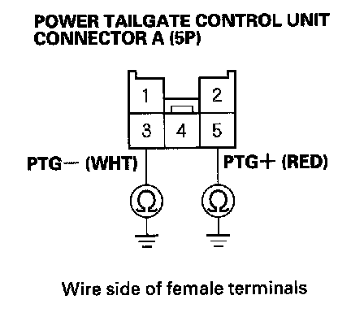
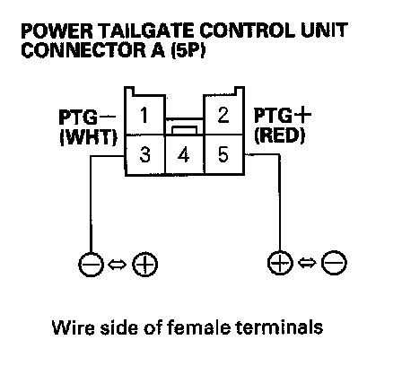
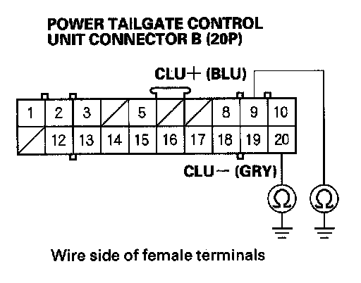
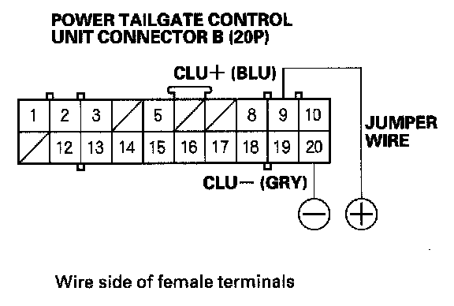
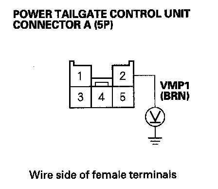
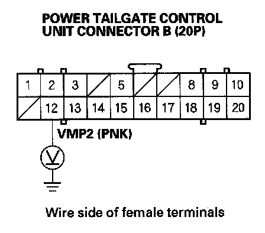
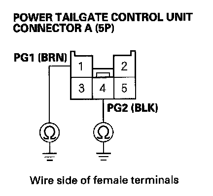

B1388
DTC B1388: Power Tailgate Motor Circuit Malfunction1. Open the tailgate.
2. Close the tailgate automatically with the keyless transmitter or inside tailgate switch.
3. Turn the ignition switch OFF, and then back ON (II).
4. Clear the DTCs with the HDS.
5. Check for DTCs with the HDS.
Is DTC B1388 indicated?
YES - Go to step 6.
NO - Intermittent failure, the system is OK at this time. Check for loose or poor connections between the power tailgate control unit and the drive unit.
6. Turn the ignition switch OFF.
7. Disconnect the 2P connector from the drive unit.

8. Check for continuity between the power tailgate control unit connector A (5P) No. 3 and No. 5 terminals and body ground respectively.
Is there continuity?
YES - Repair short in the wire.
NO - Go to step 9.

9. Connect battery power to the power tailgate control unit connector A (5P) No. 3 (or No. 5) terminal and ground the No. 5 or (No. 3) terminal.
10. Check the power tailgate motor operation.
Does the motor run normally?
YES - Go to step 11.
NO - Faulty power tailgate motor, replace the drive unit.
11. Disconnect the 20P connector from the power tailgate control unit connector B (20P).

12. Check for continuity between the power tailgate control unit connector B (20P) No. 9 and No. 20 terminals and body ground respectively.
Is there continuity?
YES - Repair short in the wire.
NO - Go to step 13.

13. Connect battery power to the power tailgate control unit connector B (20P) No. 9 terminal and ground the No. 20 terminal. Check for clutch operation.
Can you hear the clutch operate?
YES - Go to step 14.
NO - Faulty power tailgate clutch, replace the drive unit.

14. Measure the voltage between the power tailgate control unit connector A (5P) No. 2 terminal and body ground.
Is there battery voltage?
YES - Go to step 15.
NO - Check the No. 11 (40 A) fuse in the rear fuse/relay box. If the fuse is OK, check for an open in the wire between the rear fuse/relay box and the power tailgate control unit.

15. Measure the voltage between the power tailgate control unit connector B (20P) No. 12 terminal and body ground.
Is there battery voltage?
YES - Go to step 16.
NO - Check the No. 6 (20 A) fuse in the rear fuse/relay box. If the fuse is OK, check for an open in the wire between the rear fuse/relay box and the power tailgate control unit.

16. Check for continuity between the power tailgate control unit connector A (5P) No. 1 and No. 4 terminals and body ground respectively.
Is there continuity?
YES - Replace the power tailgate control unit.
NO - Repair open in the wire or poor ground (G701,G702).